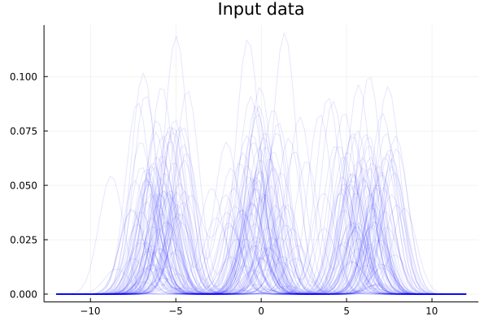
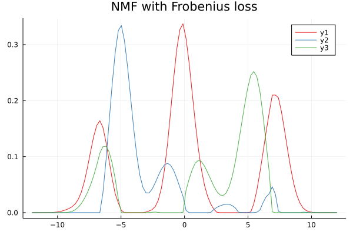
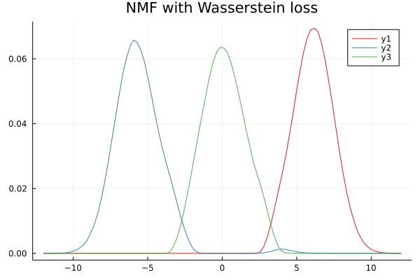
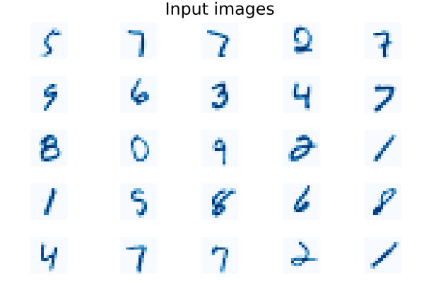
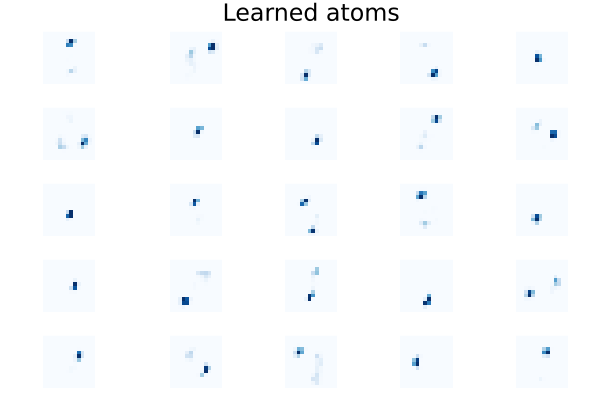
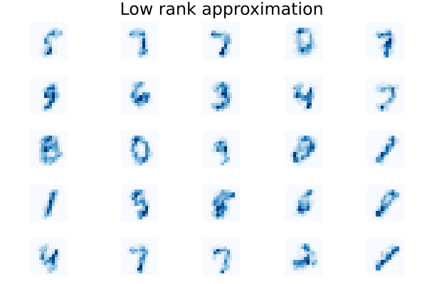

Wasserstein non-negative matrix factorisation

You are seeing the HTML output generated by Documenter.jl and Literate.jl from the Julia source file. The corresponding notebook can be viewed in nbviewer.
In this example, we implement Wasserstein non-negative matrix factorisation (W-NMF) following the paper [RCP16] by Rolet et al.
Introduction
Matrix decomposition is a classical problem in machine learning. Given a $m \times n$ matrix $X$ representing $n$ repeated $m$-dimensional observations, one may seek matrices $D, \Lambda$ of appropriate dimensions such that
\[X \approx D \Lambda.\]
For a target rank $k < \min \{ m, n \}$, i.e. $D \in \mathbb{R}^{m \times k}, \Lambda \in \mathbb{R}^{k \times n}$, this problem can be thought of as seeking a low-dimensional linear representation $D \Lambda$ of the potentially high-dimensional dataset $X$.
Lee and Seung [LS99] observed that the data matrix $X$ is non-negative in many practical applications, and that naturally one may want the factor matrices $D, \Lambda$ to be also non-negative.
For a given $m \times n$ matrix $X \ge 0$, finding the factor matrices $D \in \mathbb{R}^{m \times k}, \Lambda \in \mathbb{R}^{k \times n}$ such that $X \approx D \Lambda$ with $D \ge 0, \Lambda \ge 0$ is known as the rank-$k$ non-negative matrix factorization (NMF) problem. Typically, such an approximate representation is sought by solving a minimisation problem
\[\min_{D \in \mathbb{R}^{m \times k}, \Lambda \in \mathbb{R}^{k \times n}, D \ge 0, \Lambda \ge 0} \Phi(X, D \Lambda),\]
where $(X, Y) \mapsto \Psi(X, Y)$ is a loss function defined on matrices. Commonly used choices of $\Phi$ include the squared Frobenius loss $\Phi(X, Y) = \| X - Y \|_F^2$ and Kullback-Leibler divergence $\Phi(X, Y) = \sum_{ij} X_{ij} \log(X_{ij}/Y_{ij})$.
Both these loss functions (and many other common choices) decompose elementwise in their arguments, that is, they can be written as $\Phi(X, Y) = \sum_{ij} f(X_{ij}, Y_{ij})$ for some function $f$ acting on scalars.
Rolet et al. note that pointwise loss functions cannot account for spatial correlations in datasets with underlying geometry, and propose to use entropy-regularised optimal transport as a loss function that is sensitive to the spatial arrangement of the data. They argue that for datasets such as images, optimal transport is a more natural choice of loss function, and that it achieves superior performance.
In particular, suppose that the columns of $X$ encode image data, and that $C \in \mathbb{R}^{m \times m}$ encodes the squared Euclidean distances on the imaging domain. The problem that Rolet et al. pose is
\[\min_{D \in \mathbb{R}^{m \times k}_{\ge 0}, \Lambda \in \mathbb{R}^{k \times n}_{\ge 0}} \sum_{i = 1}^{n} \operatorname{OT}_{\varepsilon}(X_i, (D\Lambda)_i) + \rho_1 E(D) + \rho_2 E(\Lambda),\]
where $\operatorname{OT}_{\varepsilon}(\alpha, \beta)$ is the entropy-regularised optimal transport loss between two probability distributions $\alpha, \beta$ for a cost $C$, and $E$ is an entropy barrier function (a smooth approximation to the non-negativity constraint),
\[E(A) = \sum_{ij} (A_{ij} \log(A_{ij}) - 1).\]
The parameters $\rho_1, \rho_2$ control how "sharp" the non-negativity constraints are. As $\rho_1, \rho_2 \to 0$, the smoothed constraint approaches the hard non-negativity constraint. Finally, $\varepsilon$ controls the regularisation level for the optimal transport loss.
This example shows how this method can be implemented using functions from the Dual submodule of OptimalTransport.jl.
Set up prerequisites
Load packages that will be required later.
using OptimalTransport
import OptimalTransport.Dual: Dual
using MLDatasets: MLDatasets
using StatsBase
using Plots;
default(; palette=:Set1_3)
using LogExpFunctions
using NNlib: NNlib
using LinearAlgebra
using Distances
using Base.Iterators
using NMF
using OptimDefine simplex_norm!, which normalises x to sum to 1 along dims.
function simplex_norm!(x; dims=1)
return x .= x ./ sum(x; dims=dims)
endsimplex_norm! (generic function with 1 method)Implementation
We now implement Wasserstein-NMF. Rolet et al. split the original non-convex problem into a pair of convex problems, one for $D$ and one for $\Lambda$.
\[\begin{aligned} &\min_{D \in \mathbb{R}^{m \times k}} \sum_{i = 1}^{n} \operatorname{OT}_{\varepsilon}(X_i, (D\Lambda)_i) + \rho_2 E(D), \\ &\min_{\Lambda \in \mathbb{R}^{k \times n}} \sum_{i = 1}^{n} \operatorname{OT}_{\varepsilon}(X_i, (D\Lambda)_i) + \rho_1 E(\Lambda). \end{aligned}\]
For each of these problems, the dual problem can be derived (see Section 3.3 of Rolet et al. for details on how this is done). These turn out to be
\[\begin{aligned} &\min_{G \in \mathbb{R}^{m \times n}} \sum_{i = 1}^n \operatorname{OT}_{\varepsilon}^*(X_i, G_i) + \rho_2 \sum_{i = 1}^{n} E^*(-(G \Lambda^\top)_i / \rho_2) \\ &\min_{G \in \mathbb{R}^{m \times n}} \sum_{i = 1}^n \operatorname{OT}_{\varepsilon}^*(X_i, G_i) + \rho_1 \sum_{i = 1}^{n} E^*(-(D^\top G)_i / \rho_1). \end{aligned}\]
The semi-dual of entropy-regularised optimal transport loss, $\operatorname{OT}_{\varepsilon}$, is implemented as Dual.ot_entropic_semidual and its gradient can be computed by Dual.ot_entropic_semidual_grad. $E^*$ turns out to be logsumexp, for which we implement a wrapper function:
function E_star(x; dims=1)
return logsumexp(x; dims=dims)
end;The gradient of logsumexp is softmax, so we define also its gradient:
function E_star_grad(x; dims=1)
return NNlib.softmax(x; dims=1)
end;Thus, for each problem we may define the dual objective and its gradient. We note that ot_entropic_semidual(_grad) automatically broadcasts along columns of its input. There is therefore no need to make multiple calls to the function, thus allowing for more efficient evaluation.
function dual_obj_weights(X, K, ε, D, G, ρ1)
return sum(Dual.ot_entropic_semidual(X, G, ε, K)) + ρ1 * sum(E_star(-D' * G / ρ1))
end
function dual_obj_weights_grad!(∇, X, K, ε, D, G, ρ1)
return ∇ .= Dual.ot_entropic_semidual_grad(X, G, ε, K) - D * E_star_grad(-D' * G / ρ1)
end
function dual_obj_dict(X, K, ε, Λ, G, ρ2)
return sum(Dual.ot_entropic_semidual(X, G, ε, K)) + ρ2 * sum(E_star(-G * Λ' / ρ2))
end
function dual_obj_dict_grad!(∇, X, K, ε, Λ, G, ρ2)
return ∇ .= Dual.ot_entropic_semidual_grad(X, G, ε, K) - E_star_grad(-G * Λ' / ρ2) * Λ
end;The only remaining part of Wasserstein-NMF to implement is the conversion at optimality from the dual variable $G$ to the primal variables $D, \Lambda$. From the results of Theorems 3 and 4 in Rolet et al., we have for $\Lambda$:
\[\Lambda_i = \operatorname{softmax}((-D^\top G)_i / \rho_1),\]
and we have for $D$:
\[D_i = \operatorname{softmax}((-G \Lambda^\top)_i / \rho_2).\]
function getprimal_weights(D, G, ρ1)
return NNlib.softmax(-D' * G / ρ1; dims=1)
end
function getprimal_dict(Λ, G, ρ2)
return NNlib.softmax(-G * Λ' / ρ2; dims=1)
end;We can now implement functions solve_weights and solve_dict that solve the respective dual problems for the next iterates of Λ and D.
function solve_weights(X, K, ε, D, ρ1; alg, options)
opt = optimize(
g -> dual_obj_weights(X, K, ε, D, g, ρ1),
(∇, g) -> dual_obj_weights_grad!(∇, X, K, ε, D, g, ρ1),
zero.(X),
alg,
options,
)
return getprimal_weights(D, Optim.minimizer(opt), ρ1)
end
function solve_dict(X, K, ε, Λ, ρ2; alg, options)
opt = optimize(
g -> dual_obj_dict(X, K, ε, Λ, g, ρ2),
(∇, g) -> dual_obj_dict_grad!(∇, X, K, ε, Λ, g, ρ2),
zero.(X),
alg,
options,
)
return getprimal_dict(Λ, Optim.minimizer(opt), ρ2)
end;Example: noisy univariate Gaussians
We set up each observation as a mixture of 3 Gaussians with means sampled from N(6, σ), N(0, σ), N(-6, σ) respectively, and mixture weights sampled uniformly from [0, 1]. The resulting mixture model is normalised to sum to 1 on the discrete domain coord.
f(x, μ, σ) = exp.(-(x .- μ) .^ 2)
coord = range(-12, 12; length=100)
N = 100
σ = 1
X = hcat(
[
rand() * f(coord, σ * randn() + 6, 1) +
rand() * f(coord, σ * randn(), 1) +
rand() * f(coord, σ * randn() - 6, 1) for _ in 1:N
]...,
)
X = simplex_norm!(X);We visualise the observations.
plot(coord, X; alpha=0.1, color=:blue, title="Input data", legend=nothing)
We can apply NMF with a squared Frobenius loss using the NMF.jl package. We seek k = 3 components. This performs poorly, since the pointwise nature of the loss function cannot handle the translational noise in the data.
k = 3
result = nnmf(X, k; alg=:multmse)
plot(coord, result.W; title="NMF with Frobenius loss", palette=:Set1_3)
We can now set up a cost matrix corresponding to the domain coord.
C = pairwise(SqEuclidean(), coord)
C = C / mean(C);Specify parameters
ε = 0.025
ρ1, ρ2 = (5e-2, 5e-2);Compute Gibbs kernel
K = exp.(-C / ε);Now we use a random initialisation, where columns of D and Λ are normalised to sum to 1.
D = rand(size(X, 1), k) # dictionary
simplex_norm!(D; dims=1) # norm columnwise
Λ = rand(k, size(X, 2)) # weights
simplex_norm!(Λ; dims=1); # norm rowwiseWe now run 10 iterations of Wasserstein-NMF.
n_iter = 10
for iter in 1:n_iter
@info "Wasserstein-NMF: iteration $iter"
D .= solve_dict(
X,
K,
ε,
Λ,
ρ2;
alg=LBFGS(),
options=Optim.Options(;
iterations=250, g_tol=1e-4, show_trace=false, show_every=10
),
)
Λ .= solve_weights(
X,
K,
ε,
D,
ρ1;
alg=LBFGS(),
options=Optim.Options(;
iterations=250, g_tol=1e-4, show_trace=false, show_every=10
),
)
end[ Info: Wasserstein-NMF: iteration 1
[ Info: Wasserstein-NMF: iteration 2
[ Info: Wasserstein-NMF: iteration 3
[ Info: Wasserstein-NMF: iteration 4
[ Info: Wasserstein-NMF: iteration 5
[ Info: Wasserstein-NMF: iteration 6
[ Info: Wasserstein-NMF: iteration 7
[ Info: Wasserstein-NMF: iteration 8
[ Info: Wasserstein-NMF: iteration 9
[ Info: Wasserstein-NMF: iteration 10
We observe that Wasserstein-NMF learns atoms (columns of $D$) corresponding to the three Gaussians used to generate the input data.
plot(coord, D; title="NMF with Wasserstein loss", palette=:Set1_3)
Example: image data (MNIST)
Here we will download MNIST dataset using MLDatasets.jl and downscale each image to 14x14 to allow for faster runtime (since we are running on CPU).
sizex, sizey = 28, 28
factor = 2 # downscale factor
Σ = hcat([sum(I(sizex)[:, i:(i + factor - 1)]; dims=2) for i in 1:factor:sizex]...)
sizex, sizey = sizex ÷ factor, sizey ÷ factor
N = 256
x, y = MLDatasets.MNIST.traindata(Float64, sample(1:60_000, N; replace=false))
x = permutedims(x, (2, 1, 3))
x = cat([Σ' * x[:, :, i] * Σ for i in 1:N]...; dims=3)
X = simplex_norm!(reshape(x, (sizex * sizey, :)));The columns of X now correspond to images "flattened" as vectors. We can preview a few images.
M = 25
plot(
[
heatmap(
reshape(X[:, i], sizex, sizey);
legend=:none,
axis=nothing,
showaxis=false,
aspect_ratio=:equal,
c=:Blues,
yflip=true,
) for i in 1:M
]...;
layout=(5, M ÷ 5),
plot_title="Input images",
)
Now we can set up coord, cost matrix C, and specify parameters.
coord = reshape(collect(product(1:sizex, 1:sizey)), :)
C = pairwise(SqEuclidean(), coord)
C = C / mean(C);
ε = 0.0025
ρ1, ρ2 = (5e-3, 5e-3);We compute the Gibbs kernel from C:
K = exp.(-C / ε);Let us aim to learn k = 25 atoms.
k = 25;Initialise again randomly
D = rand(size(X, 1), k) # dictionary
simplex_norm!(D; dims=1) # norm columnwise
Λ = rand(k, size(X, 2)) # weights
simplex_norm!(Λ; dims=1); # norm rowwiseWe now run 15 iterations of Wasserstein-NMF.
n_iter = 15
for iter in 1:n_iter
@info "Wasserstein-NMF: iteration $iter"
D .= solve_dict(
X,
K,
ε,
Λ,
ρ2;
alg=LBFGS(),
options=Optim.Options(;
iterations=250, g_tol=1e-4, show_trace=false, show_every=10
),
)
Λ .= solve_weights(
X,
K,
ε,
D,
ρ1;
alg=LBFGS(),
options=Optim.Options(;
iterations=250, g_tol=1e-4, show_trace=false, show_every=10
),
)
end[ Info: Wasserstein-NMF: iteration 1
[ Info: Wasserstein-NMF: iteration 2
[ Info: Wasserstein-NMF: iteration 3
[ Info: Wasserstein-NMF: iteration 4
[ Info: Wasserstein-NMF: iteration 5
[ Info: Wasserstein-NMF: iteration 6
[ Info: Wasserstein-NMF: iteration 7
[ Info: Wasserstein-NMF: iteration 8
[ Info: Wasserstein-NMF: iteration 9
[ Info: Wasserstein-NMF: iteration 10
[ Info: Wasserstein-NMF: iteration 11
[ Info: Wasserstein-NMF: iteration 12
[ Info: Wasserstein-NMF: iteration 13
[ Info: Wasserstein-NMF: iteration 14
[ Info: Wasserstein-NMF: iteration 15
We can inspect the atoms learned (columns of D):
plot(
[
heatmap(
reshape(D[:, i], sizex, sizey);
legend=:none,
axis=nothing,
showaxis=false,
aspect_ratio=:equal,
c=:Blues,
yflip=true,
) for i in 1:k
]...;
layout=(5, k ÷ 5),
plot_title="Learned atoms",
)
Finally, we can look at the images constructed by the low-rank approximation DΛ and compare to the original images that we previewed earlier.
X_hat = D * Λ
plot(
[
heatmap(
reshape(X_hat[:, i], sizex, sizey);
legend=:none,
axis=nothing,
showaxis=false,
aspect_ratio=:equal,
c=:Blues,
yflip=true,
) for i in 1:M
]...;
layout=(5, M ÷ 5),
plot_title="Low rank approximation",
)
This page was generated using Literate.jl.
- RCP16Rolet, Antoine, Marco Cuturi, and Gabriel Peyré. "Fast dictionary learning with a smoothed Wasserstein loss." Artificial Intelligence and Statistics. PMLR, 2016.
- LS99Lee, Daniel D., and H. Sebastian Seung. "Learning the parts of objects by non-negative matrix factorization." Nature 401.6755 (1999): 788-791.